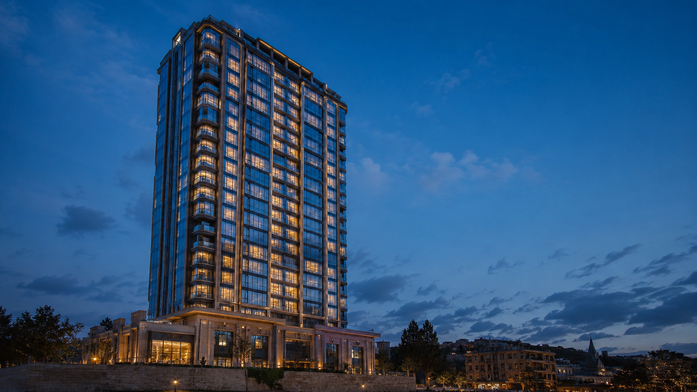

PREMİUM YAPI · İNŞAAT
Her kat, mühendislik disiplini ve el işçiliğiyle yükselir. İskeletten cepheye, tek bir standart: kusursuzluk.
Çelikten cama, her detay ölçülür. Tesadüf değil, mühendislik.
TESLİME HAZIR
Konut, ticari ve karma kullanım projeleri. Anahtar teslim mühendislik.
Görüşme planlaPROJELER
Konut, ofis ve karma kullanım projelerimizden bir seçki — klasöre tıklayıp açın.
Kapatmak için herhangi bir fotoğrafa tıkla